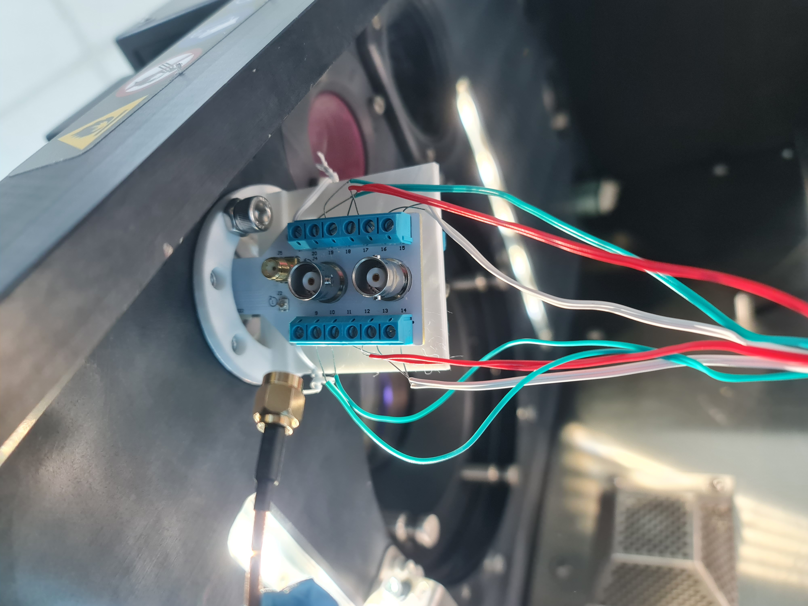
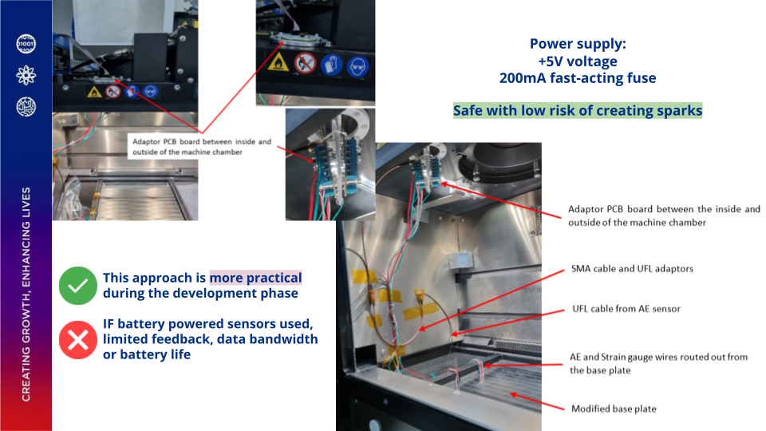

The Challenge
A major hurdle in Industrial Additive Manufacturing is the lack of real-time feedback during the fabrication process. Because complex metal parts take long periods to construct using Laser Powder Bed Fusion (LPBF), hidden flaws or excessive residual stresses can result in unusable parts and wasted machine life.
Phase 1: Mechanical Design & Sensor Instrumentation
To improve the sustainability of LPBF printing, early detection of layering faults is essential. I engineered a custom sensor instrumentation system directly onto a commercial EOS M 290 3D printer, utilizing a non-intrusive approach that avoided permanently modifying the machine chassis.
- Sensor Integration: Integrated three Rosette strain gauges to measure part warpage and mounted a Kistler 8152C Acoustic Emission sensor (100KHz - 900 kHz) to detect high-frequency stress waves from part delamination.
- Signal Routing: Safely routed 12 distinct signal wires from the internal sensors to an external NI-9236 Data Acquisition (DAQ) module through custom-machined 13mm ports.
- Safety & Design: Designed and 3D printed secure PCB holders using Siemens NX. Implemented a 200mA fast-acting fuse to eliminate spark risks, and rigorously verified the chamber maintained its critical <0.1% oxygen concentration.

Hardware Integration: The custom 3D-printed PCB holder securing terminal blocks and BNC connectors to route 12 signal channels through the 13mm machine port.

Safety & Routing: Implementing an adaptor PCB with a 200mA fast-acting fuse to safely bridge the internal powder chamber with external data acquisition systems.
Phase 2: Edge Computing & IoT Telemetry
With the hardware safely routing data, I integrated an M5Stack FIRE Industrial IoT device to remotely monitor the EOS M 290's machine state, ensuring continuous tracking of print progress without requiring an operator's physical presence.
- Firmware & Version Control: Engineered C++ firmware using the Platform.io IDE. Managed source code and continuous integration using GitLab, establishing a dedicated branch (
m290phr) for safe version control during development. - Data Querying: Constructed custom Flux scripts to parse real-time telemetry from an InfluxDB time-series database, specifically filtering for the printer's signal tower equipment nodes.
- Visual Alerts & Validation: Programmed logic to translate database states into immediate visual alerts via the edge device's LED array (Green for active printing, Red for errors). Validated the system's responsiveness by physically inducing errors, such as a sudden chamber door opening during a simulated build.

Validation testing: The M5Stack successfully syncing with the machine's physical signal tower in real-time.

C++ logic executing custom Flux queries to fetch the latest InfluxDB telemetry.
Phase 3: The Data Pipeline
Beyond edge alerts, the hardware data needed to be logged for deep process optimization. I built an end-to-end industrial data pipeline that funneled high-frequency sensor data into a time-series database.
- Deployed InfluxDB to continuously ingest the sensor telemetry.
- Developed interactive Grafana dashboards to simultaneously track and analyze 5 critical process parameters during live prints.

Data Visualization: Real-time dashboard tracking the recoater blade's status, position, and speed during the LPBF process.

Database Management: Utilizing the InfluxDB Flux builder to structure and filter high-frequency sensor data for dashboard ingestion.
The Impact
The integrated system provided unprecedented visibility into the LPBF process. Through rigorous validation experiments, the telemetry system successfully identified micro-level powder bed surface deviations of just ~50 µm. Furthermore, it reliably verified that chamber oxygen levels were maintained strictly below 0.1% under controlled conditions, ensuring optimal print quality.